FA-04 · P0-06 视觉一致性人工审核
材料绑定 FA-01 冻结的最终验收版本。审核者：人类（本会话用户）；本页只准备材料，不替人判断。
0. 审核对象身份
| 项 | 值 |
|---|---|
| 游戏 / 包 | wasteland-scavenger-recipe · pack/v1 |
| 站点 / shell | site/v1 · shell 2 · site.json = pack v1 / config game-config.json |
| 配置 | site/v1/game-config.json（= run 的 game-config.json） |
| manifest checksum | sha256:a162942d…feb3 |
| config checksum | sha256:455d9c7f…7dcd |
| 只读快照 | .scratch/fpvs-v1-final/artifacts/wasteland-scavenger-recipe/（66 文件，chmod -R a-w） |
| 可写工作区（本次截图来源） | .scratch/fpvs-v1-final/work/wasteland-scavenger-recipe/（site/pack/config 与快照逐字节一致） |
| 运行证据 | shots/（真实按键 · 通关 · 0 reset · 站点字节未改）· capture.json · events/trace/input |
| 材料索引 / 哈希 | materials.json（逐文件 sha256；源材料对快照 frozen match） |
说明：qa-report.json 的 work 版比快照只多 FA-02 的 delivery 写回；QA 层（含视觉相关 failures/observations）与快照字节一致（见 materials.json → existingVisualQa.qaReportBinding）。
1. 原始风格参考图
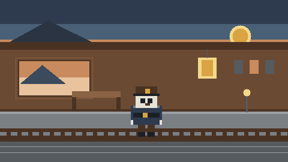
run/v1/reference.png · 480×270 · 与 style.png 同字节（sha256:76ed648e…89d0）输入意图：制作一个横版废土寻宝游戏；拾荒者在废弃城市探索、寻找资源和宝箱、躲避危险和敌人。风格：2D 横版像素、废土 / 废弃车站、低分辨率块状精灵、干净平坦色块。
2. 实际交付的资源包（关键资源）
以下均为 pack/v1/delivery/ 的真实交付图集帧（不是源图 / master）；图集帧在游戏里按 2× 显示。
角色 · scavenger-hero（idle / run / jump）
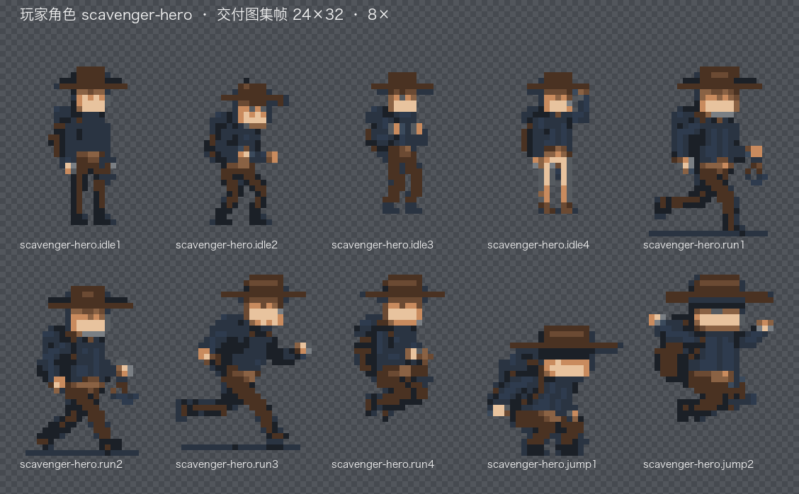
巡逻危险物 · wasteland-patroller
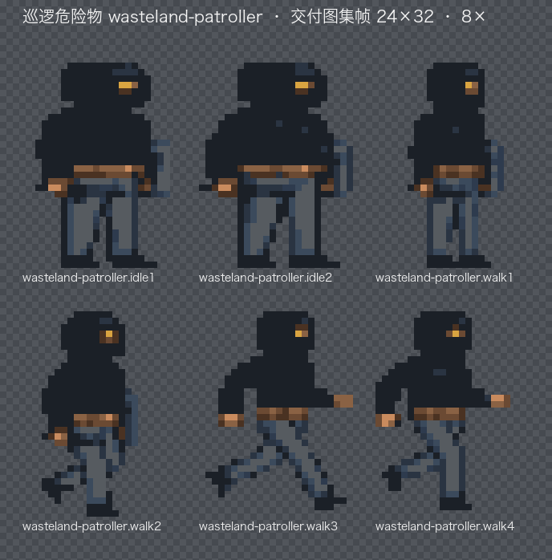
宝箱 / 收集物 / 平台 / HUD
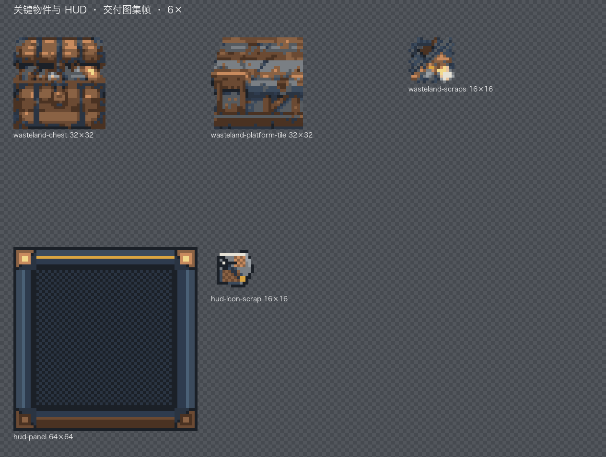
背景层（sky / ruins / wall / railway）
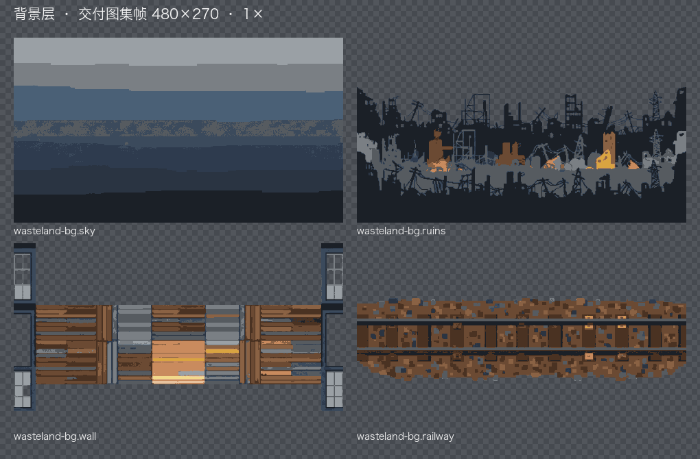
3. 实际运行画面（冻结站点 · 真实按键）
截图 1000×457（Chrome 视口）；游戏 480×270 以 zoom 2 渲染为 960×540，上下被视口裁切。运行结果：won=true · collected=6 · chests=2 · reset=0 · runtime-error=0；站点字节前后未改（见 capture.json → siteIntegrity）。
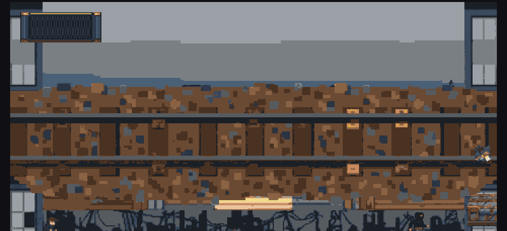
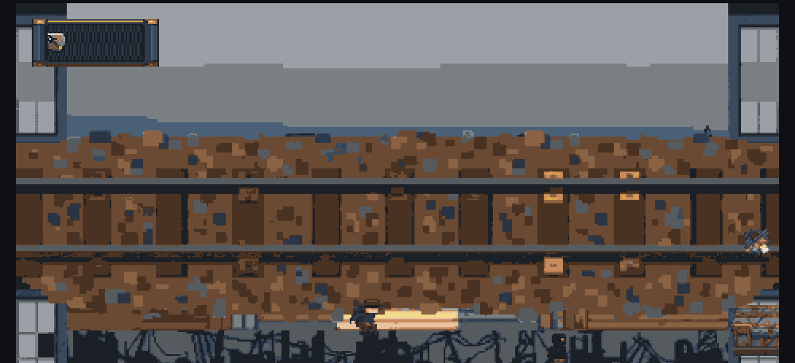
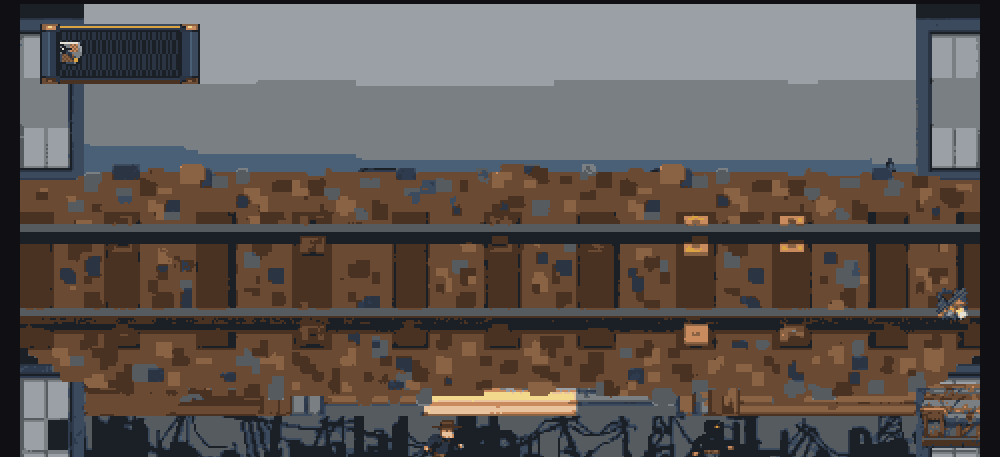
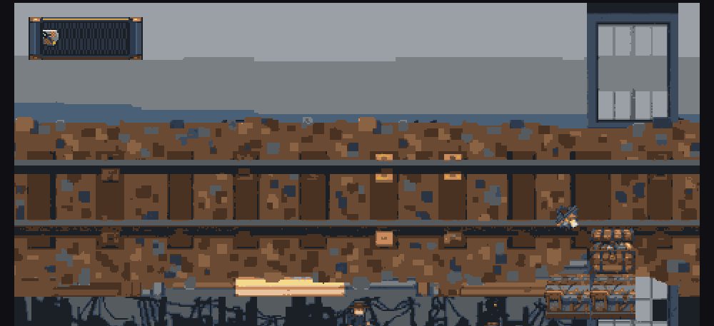
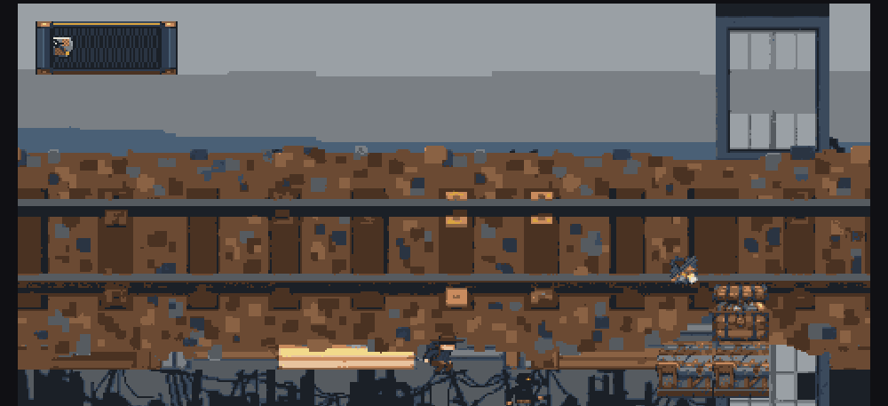
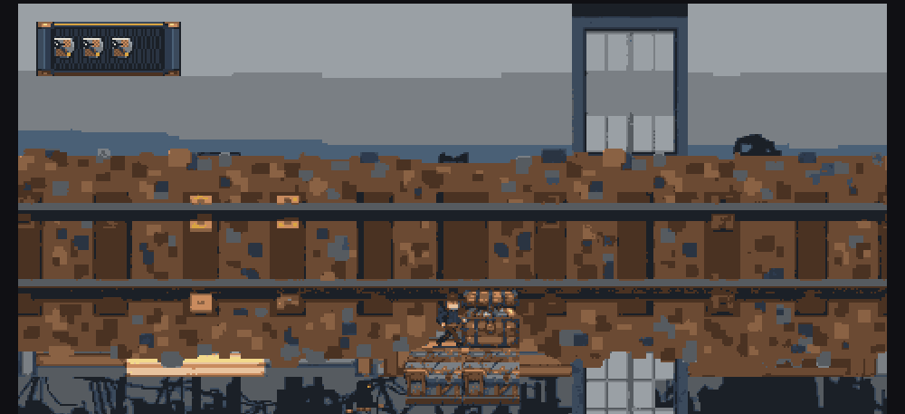
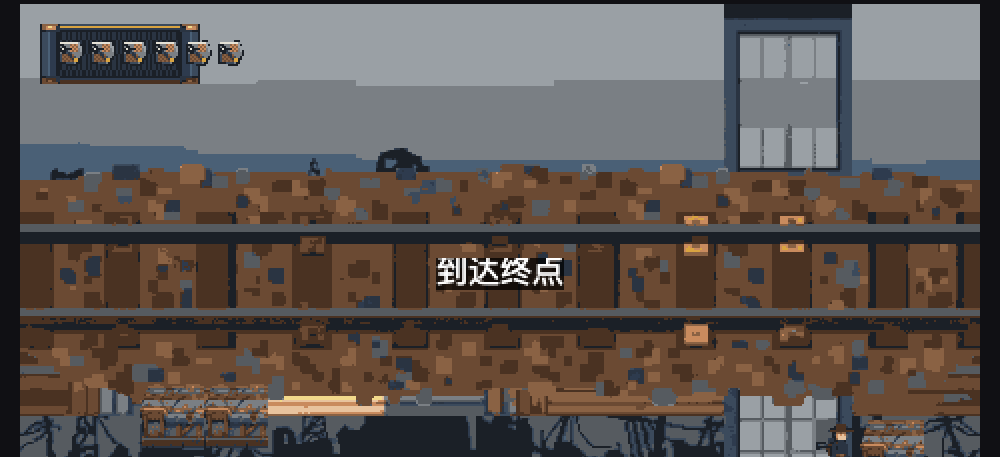
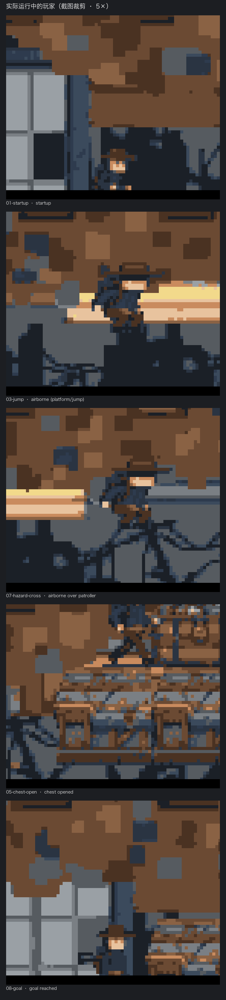
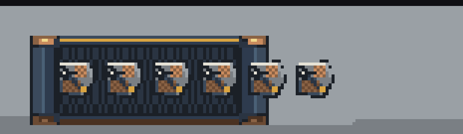
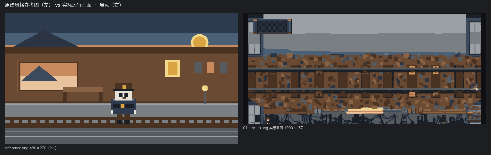
4. 已有 Visual QA 结果与问题记录（辅助，不替代人工判断）
QA 的视觉观察通道为 unavailable（未配置视觉上游）。以下是 QA 层已有记录：
| target | 记录 | 严重度 |
|---|---|---|
| wasteland-patroller | 视觉设计构图 16×16，配置几何 24×32 —— 尺寸有差（只报、不阻断） | warning |
| wasteland-chest | 视觉设计构图 16×16，配置几何 32×32 —— 尺寸有差（只报、不阻断） | warning |
设计意图（visual-world.json）：整体为“低到中等密度、干净水平分层”的 flat pixel art；背景层覆盖率 sky 100% / ruins 58.5% / wall 45.1% / railway（见 run/v1/qa-report.json inspect 观察）。
源图 → 目标尺寸的长宽比观察（不阻断）：hero jump −10.2%、patroller walk +18.5%、patroller idle +8.4%，其余 ≤4.3%。
5. 请人类逐项判断（FR-04 表）
每项填写：通过 / 不通过 / 无法确认 + 理由 + 证据。所有材料均绑定上面的最终版本；缺失项必须标“无法确认”，不得用历史 PASS 替代。
| 检查项 | 判断问题 | 结论 | 主要理由 / 已发现问题 / 证据 |
|---|---|---|---|
| 整体风格 | 游戏画面的整体美术表达是否与参考图一致 | ||
| 色彩与明暗 | 主色调、对比关系及明暗分布是否存在明显偏差 | ||
| 角色 | 玩家角色的外观、轮廓和视觉表达是否符合预期 | ||
| 场景 | 背景、地形及环境元素是否符合参考图风格 | ||
| 关键物件 | 宝箱、收集物、危险物等关键资源是否符合游戏意图 | ||
| 实际运行效果 | 资源在游戏中是否出现明显裁切、比例异常、错位或其他影响体验的问题 |
总体结论：全部通过 → pass；任一明确不通过 → fail；材料不完整 / 版本不匹配 / 无法可靠判断 → incomplete。
6. 审核记录
| 被审核版本 | wasteland-scavenger-recipe pack/v1 · site/v1 · shell 2 · config sha256:455d9c7f…7dcd |
|---|---|
| 参考图 | run/v1/reference.png（= style.png） |
| 运行画面 | shots/01..09（真实按键通关，0 reset，站点字节未改） |
| 审核结果 | （待人类填写） |
| 主要判断理由 | （待人类填写） |
| 已发现问题与证据 | （待人类填写） |
| 审核时间 / 审核者 | （待人类填写） |